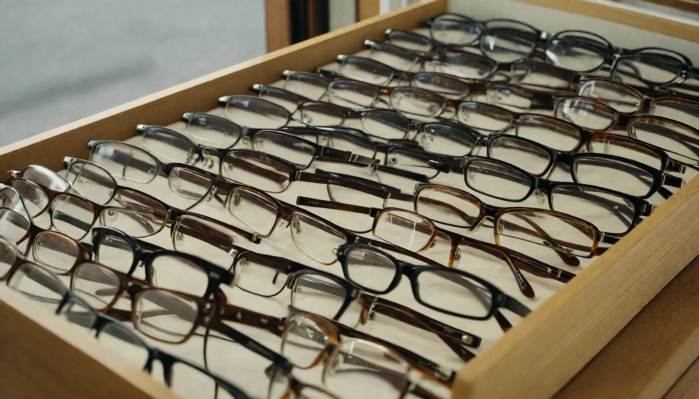

ラウンド 27,500円
面長の方に。やわらかい印象になります。
店には約300本あります。迷ったら、まずこの六つの形をかけ比べてください。

面長の方に。やわらかい印象になります。
どの顔にも合わせやすい、最初の一本向き。
丸顔の方に。顔の輪郭を引き締めます。
チタンの細い枠。仕事用に選ぶ方が多い形です。
上が平ら、下が丸い形。眉の線がきれいに出ます。
角ばった輪郭の方に。度の強い方も厚みが目立ちません。
値段はどれもレンズ込みです。ここに無い、いちばん手ごろな枠は22,000円からあります。お持ちの枠にレンズだけ入れることもできます(11,000円から)。